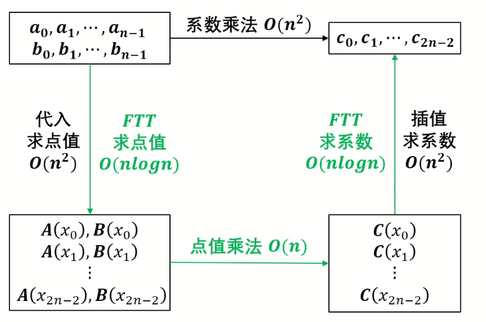
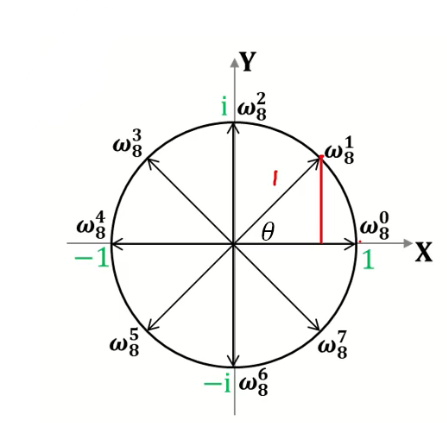
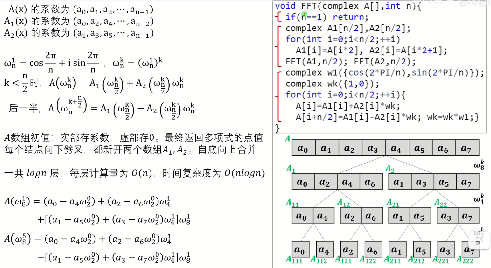
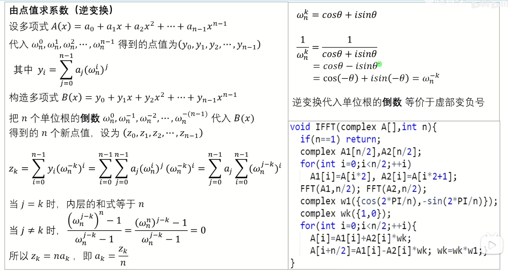
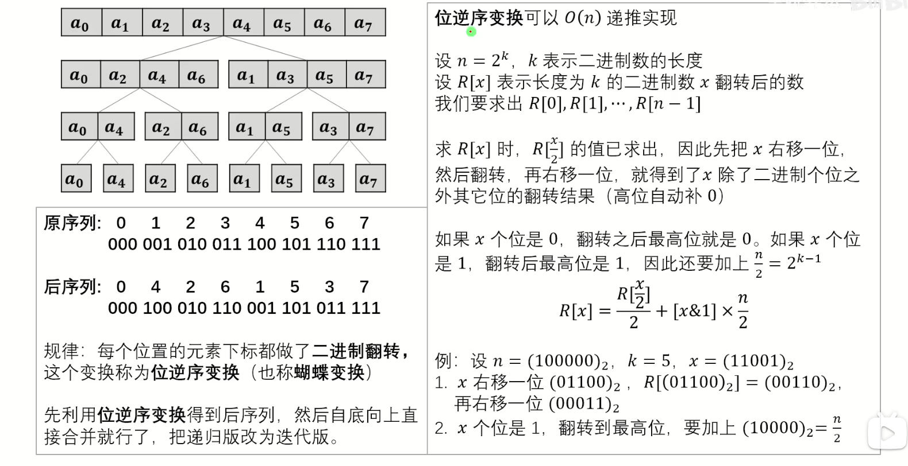
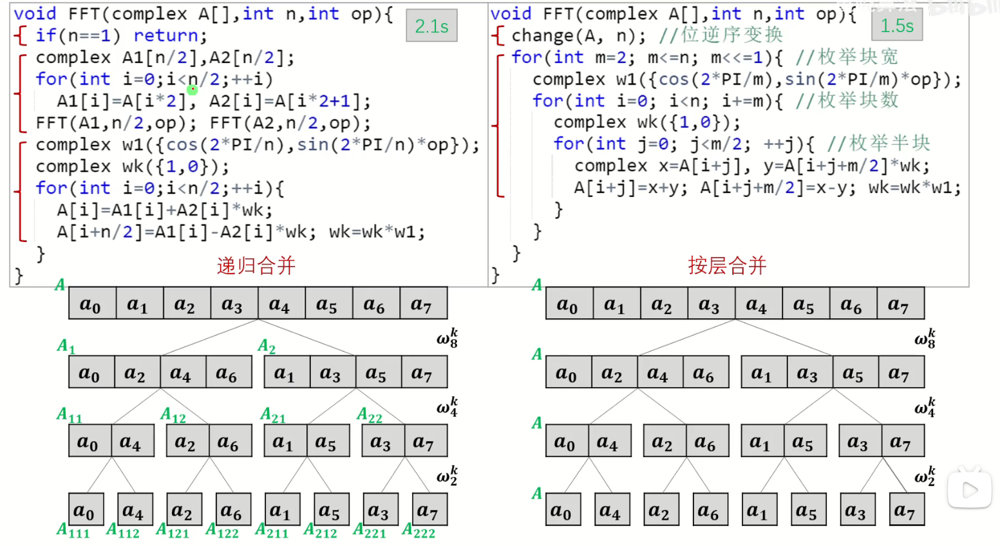

多项式乘法
- 两个n-1次多项式相乘得到一个2n-2次多项式
- 给定n个点可以确定n-1次多项式函数
多项式的点值乘法
(1) 取 $x_0, x_1, x_2, \cdots x_{2n - 2}$ 分别代入，求点值 - $A(x): y_0, y_1, y_2, \cdots, y_{2n - 2}$ - $B(x): y_0', y_1', y_2', \cdots, y_{2n - 2}'$
(2) 相乘 $C(x): y_0y_0', y_1y_1', y_2y_2', \cdots, y_{2n - 2}y_{2n - 2}'$
(3) 插值 $C(x): c_0, c_1, c_2, \cdots, c_{2n - 2}$
快速傅里叶变换
快速傅里叶变换可以把求点值和求系数均优化为O(nlogn)

单位圆(复平面上圆心在原点且半径为1的点)
圆上的点：$z=cos\theta+isin\theta(0\leq\theta<2\pi)$
把圆分成 $n$ 等分，可得方程 $z^{n}=1$ 的 $n$ 个复数根
单位根 $\omega_{n}^{k}=\cos\frac{2\pi k}{n}+i\sin\frac{2\pi k}{n}$
$$ \omega_{n}^{k} \omega_{n}^{m} = \omega_{n}^{k + m}, \quad (\omega_{n}^{k})^{m} = \omega_{n}^{km} $$

$ \text{FFT要求} \quad n = 2^{b} \in \mathbb{N} $
-
周期性 $ \omega_{n}^{k + n} = \omega_{n}^{k} $
-
对称性 $ \omega_{n}^{k+\frac{n}{2}} = -\omega_{n}^{k} $
-
折半性 $ \omega_{n}^{2k} = \omega_{\frac{n}{2}}^{k} $
由系数求点值(正变换)
设$A(x)$的系数为$(a_0,a_1,a_2,\cdots,a_{n - 1})$，则
$A(x)=a_0 + a_1x + a_2x^2 + a_3x^3+\cdots + a_{n - 1}x^{n - 1}$
$$ \begin{align} A(x)&=(a_0 + a_2x^2+\cdots + a_{n - 2}x^{n - 2})+ (a_1x + a_3x^3+\cdots + a_{n - 1}x^{n - 1})\ &=(a_0 + a_2x^2+\cdots + a_{n - 2}x^{n - 2}) \quad (\text{偶项})\ &+(a_1x + a_3x^3+\cdots + a_{n - 1}x^{n - 1}) \quad (\text{奇项}) \end{align} $$
设 $$ \begin{align} A_1(x)&=a_0 + a_2x + a_4x^2+\cdots + a_{n - 2}x^{\frac{n - 2}{2}}\ A_2(x)&=a_1 + a_3x + a_5x^2+\cdots + a_{n - 1}x^{\frac{n - 2}{2}} \end{align} $$
则$A(x)=A_1(x^2)+A_2(x^2)x$
将$\omega_{n}^{k}(k<\frac{n}{2})$代入得：
$$ \begin{align} A(\omega_{n}^{k})&=A_1(\omega_{n}^{2k})+A_2(\omega_{n}^{2k})\omega_{n}^{k}\ &=A_1\left(\omega_{\frac{n}{2}}^{k}\right)+A_2\left(\omega_{\frac{n}{2}}^{k}\right)\omega_{n}^{k} \end{align} $$
将$\omega_{n}^{k+\frac{n}{2}}$代入得：
$$ \begin{align} A\left(\omega_{n}^{k+\frac{n}{2}}\right)&=A_1(\omega_{n}^{2k + n})+A_2(\omega_{n}^{2k + n})\omega_{n}^{k+\frac{n}{2}}\ &=A_1\left(\omega_{\frac{n}{2}}^{k}\right)-A_2\left(\omega_{\frac{n}{2}}^{k}\right)\omega_{n}^{k} \end{align} $$

由点值求系数(逆变换)

迭代法
位逆序变换

迭代法

快速数论变换
未完待续....